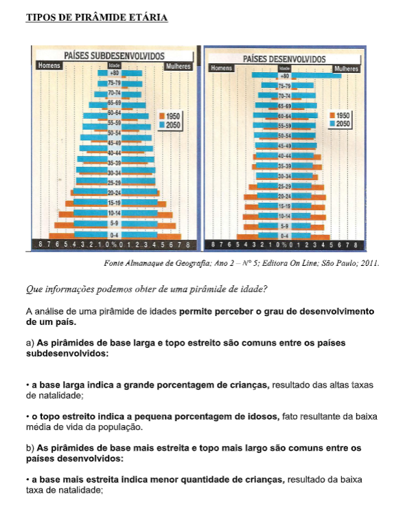
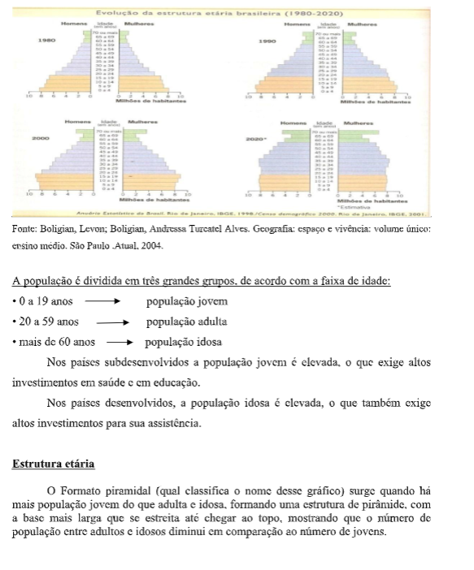
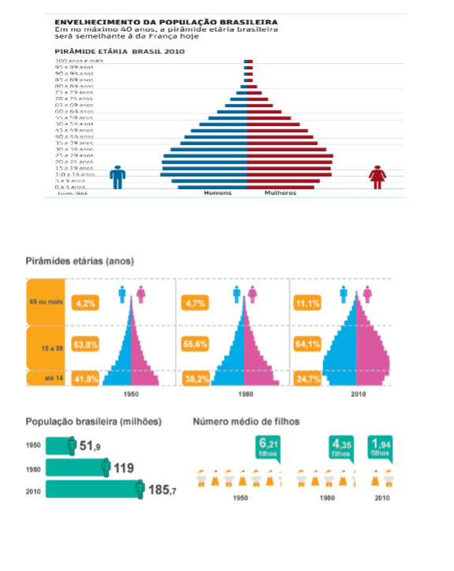
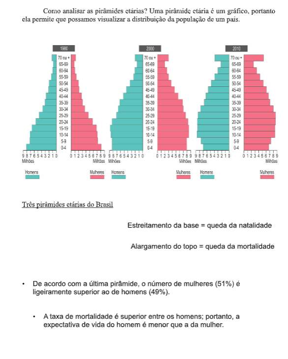

Capítulo 4: A Estrutura etária da População
Questão:Ao estudar este capítulo, busque responder à seguinte questão: O que é a estrutura etária da população e como ela é representada?
Contextualizando - Consumo de produtos têxteis e idadeO valor que os jovens dão ao consumismo e como eles fazem uso de marcas para se autoafirmarem junto à sociedade é preocupante. O celular tal, a calça X, a roupa Y, a maquiagem milagrosa! A oferta de produtos é absurda e dispara o desejo do “sempre quis um desse”, “isso é tudo que eu quero” ou “eu preciso muito disso”. Os desejos são atendidos, a satisfação é momentânea e o ciclo de falsas necessidades reinicia. Esse assunto é incômodo para alguns, inexistente para outros e necessário para todos nós, pais ou não. O pesquisador da UFMG Paulo César Pinho Ribeiro alerta sobre essa tendência entre os jovens: “Há um consumo exagerado de tudo: dinheiro, imagem, roupas, perfumes, adornos, grifes, amor, sexo, bens de consumo e substâncias lícitas e ilícitas. O planeta em que vivemos está em crise. De um lado, consumismo exagerado e avanços tecnológicos que nos surpreendem a cada dia; de outro, fome, miséria e desigualdade. Um mundo onde o ter é mais importante do que o ser. Neste mundo consumista, os adolescentes foram escolhidos como o alvo mais fácil dessa escalada sem rumo, sendo hoje chamados de filhos do consumismo”. Não é fácil educar um filho em um mundo cercado de valores superficiais. Precisamos estar centrados em nossa responsabilidade como pais e não podemos deixar que essa missão fique comprometida por conta da nossa vida agitada. O cotidiano cada vez mais exigente entra em choque com o nosso compromisso de educar, assim os dias precisam ser vividos com sabedoria e olhar atento. O importante é ter essa consciência e fazer com que o tempo passado junto aos filhos tenha qualidade, para que eles cresçam bem, com saúde física e emocional. Fonte: https://dinheirama.com/adolescencia-alvo-facil-para-o-consumismo/
Estrutura etária da população é uma forma de representar a distribuição da população por faixa de idade. Normalmente, a estrutura etária da população é representada por meio das pirâmides de idades, onde aparece também a divisão da população segundo o sexo.
• o topo mais largo indica a grande porcentagem de idosos, fato resultante da elevada média de vida da população.
As pirâmides etárias da população brasileira.
   Mulheres e o trabalhoEm 2010, cerca de 40 milhões de mulheres, trabalhavam exercendo atividades remuneradas; o número de homens era de 53 milhões.

Para Saber Mais
Assista aos vídeos abaixo e anote em seu material as informações que considerar mais importantes